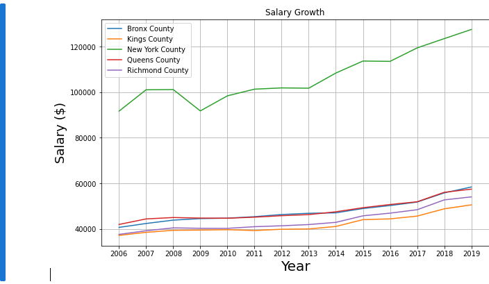
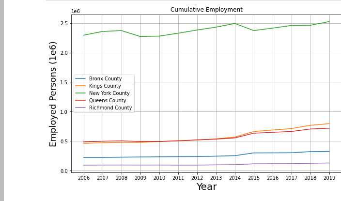
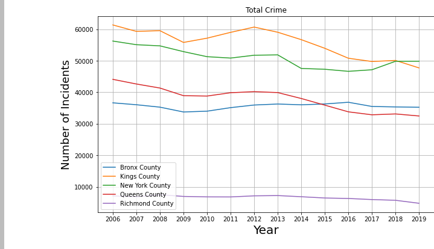
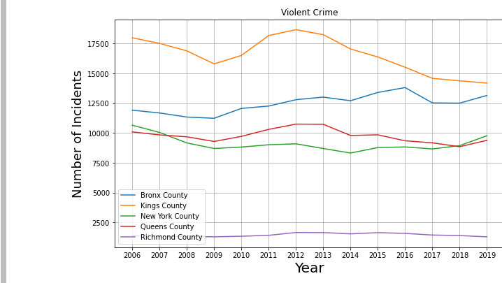
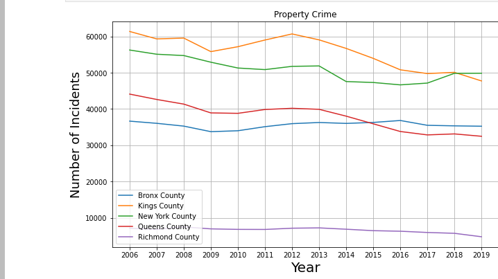

A Study of Gentrification

Abstract
Gentrification is a phenomenon that takes place when housing becomes too expensive to accomodate pre-existing or indigenous community members. With the arrival of the pandemic, home affordability has become a popular subject that is garnering an increasing amount of attention. Anyone can observe the recently deceased rent moratorium and skyrocketing house prices and predict that a crsis is potentially imminent. Housing is a staple of human life and a fundamental necessity, therefore it is essential that people have a thorough understanding of the causes and externalities of changes in home affordability.
Conclusions
Visualizations
Median Salary per Borough
Total Amount of Jobs per Borough
Total Crime per Borough
Total Violent Crime per Borough
Total Property Crime per Borough
Links to Code
>Resources
Data
Racial/Ethnic Demographics
Rent Data
Crime Rates
House Pricing Index
References
Geojson county borders provided by Eric Celeste.
Geojson zip code borders provided by enactdev .
Supreme Court verdict on Rent Moratorium (pdf).